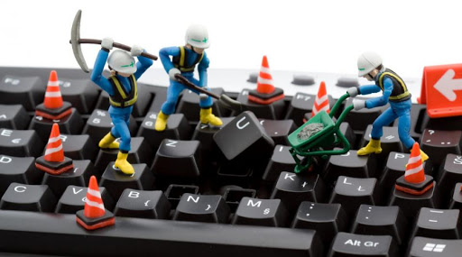

SERVICIO EN CÓMPUTO | SOPORTE EN COMPUTO |
|---|---|
|  | Nuestro servicio, garantiza la revisión y optimización del funcionamiento del computador, así como realizar los soportes necesarios con el fin de prevenir fallas y mal funcionamiento del equipo. Este, consiste en realizar una limpieza general y hacer una verificación de funcionalidad tanto a la parte física (Hardware) como a la parte lógica del equipo (Software), proporcionando además, unas pautas de buenas prácticas para el uso del equipo. |